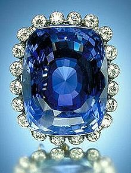

SAPHIRE OR NEELAM

ABOUT:
Sapphire is a precious gemstone, a variety of the mineral corundum, consisting of aluminum oxide (α-Al2O3) with trace amounts of elements such as iron, titanium, chromium, vanadium, or magnesium. It is typically blue, but natural "fancy" sapphires also occur in yellow, purple, orange, and green colors; "parti sapphires" show two or more colors. The only color corundum stone that the term sapphire is not used for is red, which is called a ruby.[2] Pink colored corundum may be either classified as ruby or sapphire depending on locale. Commonly, natural sapphires are cut and polished into gemstones and worn in jewelry. They also may be created synthetically in laboratories for industrial or decorative purposes in large crystal boules. Because of the remarkable hardness of sapphires – 9 on the Mohs scale (the third hardest mineral, after diamond at 10 and moissanite at 9.5) – sapphires are also used in some non-ornamental applications, such as infrared optical components, high-durability windows, wristwatch crystals and movement bearings, and very thin electronic wafers, which are used as the insulating substrates of special-purpose solid-state electronics such as integrated circuits and GaN-based blue LEDs.
Sapphire is the birthstone for September and the gem of the 45th anniversary. A sapphire jubilee occurs after 65 years.[3]